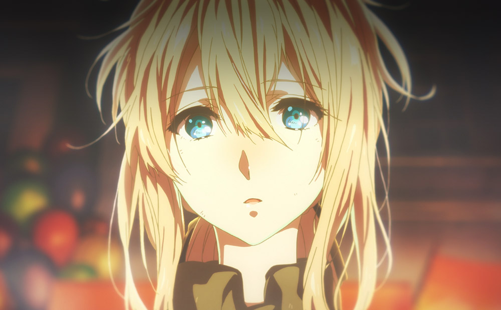
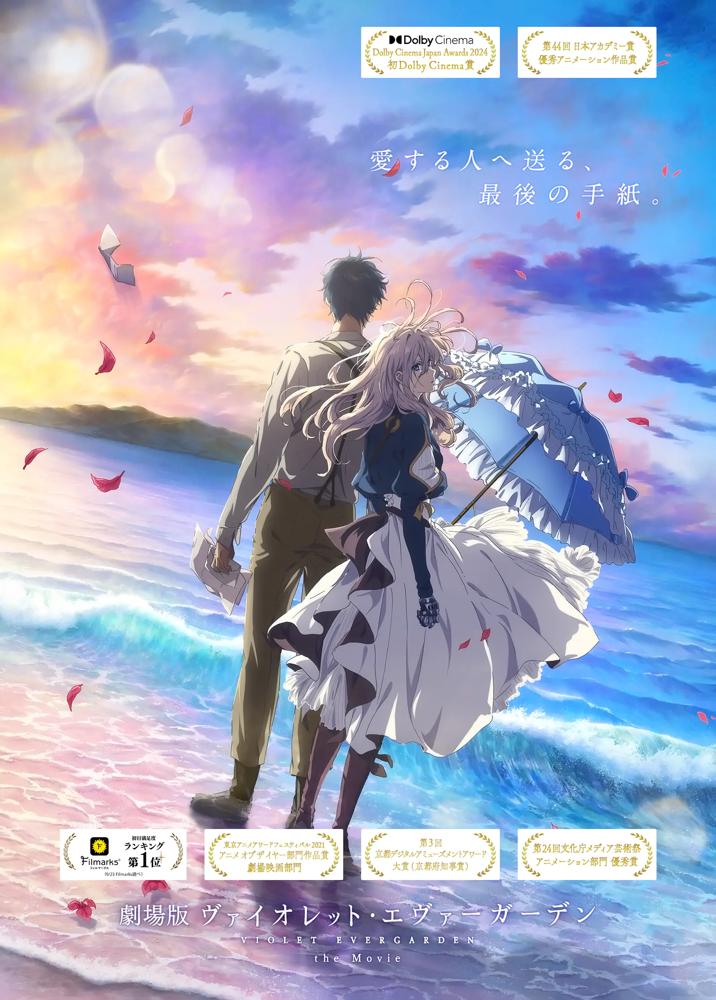
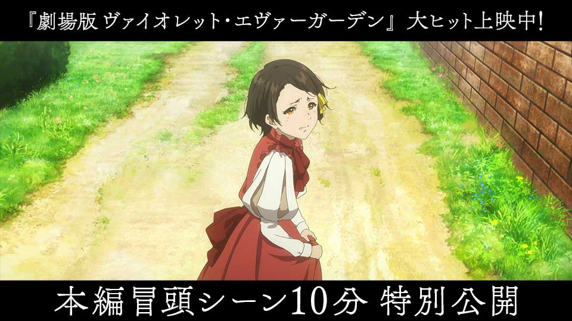

01
战争与失语
薇尔莉特在战场失去双臂与归处，也留下“我爱你”这句尚未读懂的话。

Story
她替别人写下思念，也在每一封信里，一点点读懂自己心中的答案。
战争结束后的数年，社会逐步恢复，新的通信技术也在改变时代。 曾经只会战斗的薇尔莉特成为自動手記人形，在代笔工作中学习理解人与情感。 她想知道“我爱你”的真正意义，也在一封封信件里走向自己的告别与新生。


薇尔莉特在战场失去双臂与归处，也留下“我爱你”这句尚未读懂的话。
加入 C.H 邮政社后，她通过委托信件学习表达、倾听与共情。
在不断送达他人心意的过程中，她终于有勇气面对自己的思念与伤痛。
剧场版与外传将主线收束到“如何放下与珍藏”，完成角色的情感终章。
核心命题：学会表达与理解爱
情绪关键词：修复、共情、成长
推荐顺序：第一步观看，建立世界与角色基础。
核心命题：身份、阶层与选择
情绪关键词：克制、守护、希望
推荐顺序：TV 后观看，补足支线视角。
核心命题：告别、抵达与和解
情绪关键词：深情、勇气、余韵
推荐顺序：最后观看，完成主线收束。

在为失去亲人的委托人代笔时，薇尔莉特第一次真正触碰到“替他人说出内心”的重量。

信件让当下的情感穿越时间，在未来被读到，也让“告别”拥有了被温柔承接的可能。
剧场版延续了“想见却不能见”的主题，把思念推向更深层的自我理解与选择。

电报与电话兴起的时代里，手写信依然保留着最郑重、最有人温度的表达方式。